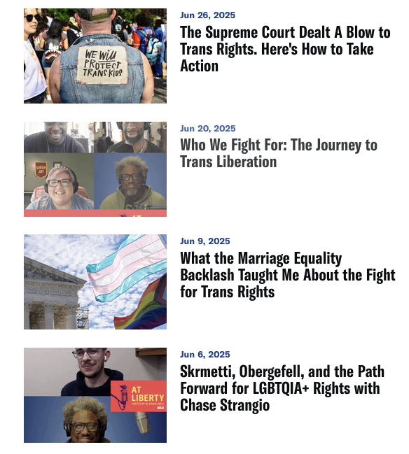
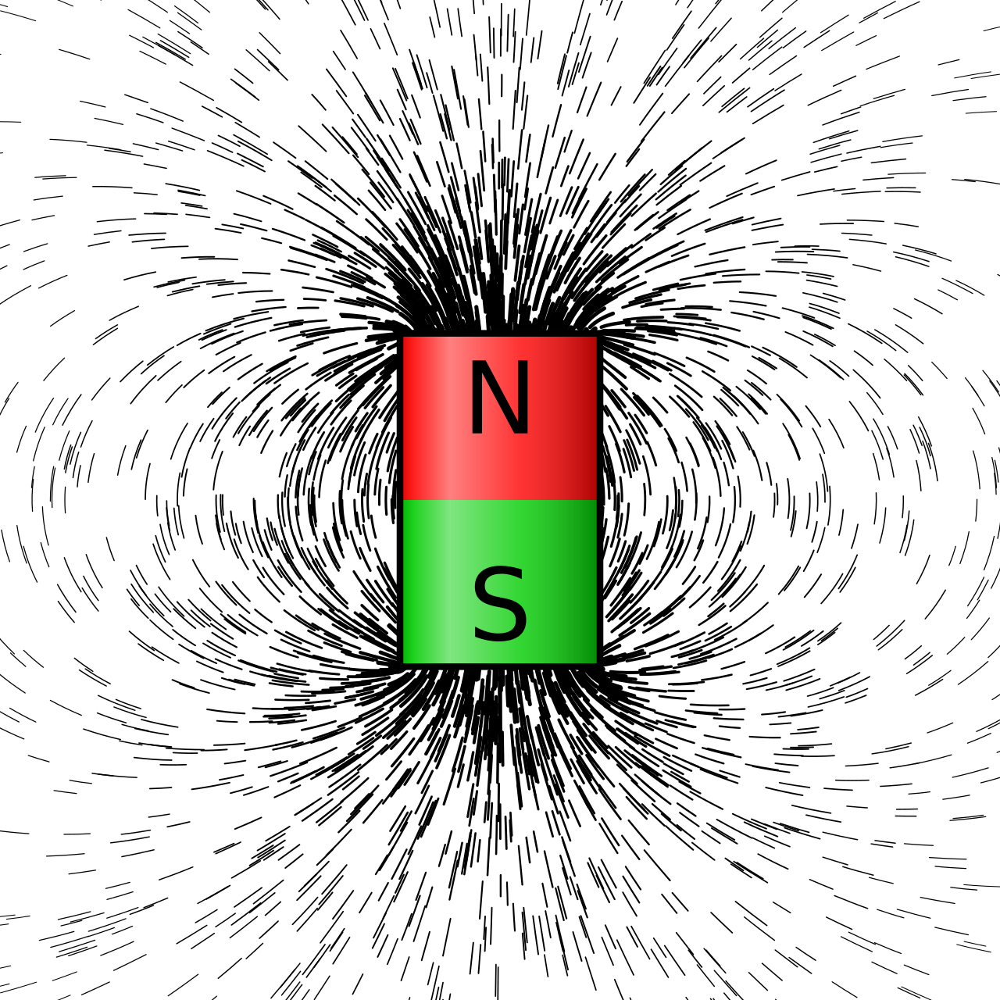

Table of Contents
1. CHAPTER FIVE: "Text Generation"
1.1. Polarization
Over 25 years ago, in the midst of the AIDS epidemic and the government's lack of response, Eve Kosofsky Sedgwick wondered about the point of doing critique in the first place. Even if critique could expose governmental neglect of marginalized populations, that "the lives of African Americans are worthless in the eyes of the United States; that gay men and drug users are held cheap where they aren't actively hated," Sedgwick writes, "what would we know then that we don't already know?" (Novel Gazing 3-4). In Sedgwick's work, this question indexes a shift thinking around reading practices, from a focus on knowledge, "Is a particular piece of knowledge true?," toward method, "What does knowledge do–the pursuit of it, the having and expressing of it?" (Novel Gazing 4). Her proposed reading method, reparative reading, draws from a restorative and pleasurable impulse, "to assemble and confer plentitude on an object that will then have resources to offer to an inchoate self" (Novel Gazing 28). It is a kind of reading that seeks to replenish and sustain resistance work through the generation of new meaning.
This chapter takes the prospect of generation as an analytic quite literally. This 30-year-old, foundational methodology in Queer Theory, is apt for our current sociopolitical moment. Whereas Sedgwick offers reparative reading in response to the AIDS crisis, I pose text generation, specifically by automated systems, as an apt hermeneutic for analyzing political polarization today around debates on gender rights. This chapter uses text generation as a analytical tool for surfacing where polarized perspectives aournd gender might intersect. It does this because machine learning, as I demonstrate below, transforms language into what I call aggregate forms, which surfaces sites of potential intersection among polarized points of view.
I will illustrate with an example. I trained a pair of Large Language Models1 deliberately to express polarized points of view. To train these models, I used a "base" model, called gpt-2, an early, open-source iteration of the GPT model series from OpenAI.2 I then re-trained the base model on new, custom datasets based on progressive and conservative news sources. The first dataset I scraped3 from the ACLU's webpage on "transgender rights."4 (This process of re-training is technically called "fine-tuning," which I explain in more detail below). See Figure 1 below for a sample of the 280 articles that I scraped for the dataset.

Figure 1. Screenshot of "transgender rights" page from the ACLU. https://www.aclu.org/news/by-issue/transgender-rightsAfter training the model on these articles, I prompted to define the terms "Masculinity" and "Femininity." It responded with the following statements:
Masculinity is a matter of love and celebration.
Masculinity is a space for hope and liberation for all.
Masculinity is not defined solely by the beauty of our bodies, but by the beauty of our experiences.
Femininity is a celebration of beauty, feminine liberation, and femininity.
Femininity is our joy, our struggle, and our fight is our struggle.
Femininity is about allowing people to express themselves without government interference. (Appendix 1)
The outputs from this model, trained on progressive source data, align with what one might expect from a perspective that affirms gender diversity and expression. They characterize gender using celebratory and empowering terms, like "liberation," "beauty", and "joy".
Then, I trained another model to express a conservative point of view. This model was trained on articles from the Heritage Foundation, a conservative think-tank based in Washington, D.C.5 For this training dataset, I scraped 278 articles from the "gender" page on the website. Concerning gender, the articles represent a firmly conservative point of view, expressed by the titles in Fig. 2.
Figure 2. Screenshot of "Gender" topic page from the Heritage Foundation. https://www.heritage.org/gender
Finally, I prompted the conservative model with the same gender-based prompts as the progressive model. It responded with the following outputs:
Masculinity is the cornerstone of Western civilization.
Masculinity is the fruit of patriarchy, and patriarchy is the heart of conservatism.
Masculinity is defined by the ability to produce sperm, eggs, and live children.
Femininity is an enduring American tradition.
Femininity is defined by means of the relationship between the sexes, the ability to raise their children, the capacity to provide for their own reproduction, the capacity to provide for their own children, the ability to provide for their own. (Appendix 2)
Like the progressive model, gender is portrayed in a positive light: it is a "cornerstone," "the fruit of patriarchy," and "enduring." Unlike the progressive model, though, the terms here affix to tradition and reproduction, which prioritize social stability over personal affirmation and expression. Nevertheless, these differences between the two models are what one typically expect between mainstream conservative and progressive points of view.
However, the conservative model reveals a peculiarity that centers on the term "subjectivity":
Masculinity is a subjective self-perception, not a universal concept.
Femininity is a subjective, internal sense of self.
The gender binary is a subjective, malleable, and often incorrect idea.
The gender binary is a subjective, internal, and often transitory concept.
The gender binary is a subjective, grammatically incorrect and illogical concept that conflates sex and gender identity. (Appendix 2)
This term, "subjectivity," appears in ways that one wouldn't typically associate with the conservative viewpoint. In fact, the description of the gender binary as "a subjective, internal, and often transitory concept" directly contradicts current conservative positioning, which overwhelmingly reifies that binary. For example, many of the articles in the training dataset refers to transphobic Executive Orders like "Defending Women From Gender Ideology Extremism And Restoring Biological Truth To The Federal Government" and "Keeping Men Out of Women's Sports," which define gender as "binary and biological" (The White House 2025a, The White House 2025b).
In contrast to the conservative view of gender, these outputs more closely resemble the progressive position. This position largely associates gender as an identity that is internal rather than biological. The American Psychiatric Association, for example, defines gender identity as "a person's inner sense of being a girl/woman, boy/man, some combination of both, or something else" ("What is Gender Dysphoria?"). Similarly, the World Health Organization defines gender identity as "a person's innate, deeply felt internal and individual experience of gender," and contrasts it to biological sex, adding that gender identity "may or may not correspond to the person's physiology or designated sex at birth" ("Gender and health" 2025). In contrast to the "binary and biological" perspective by the conservative side, the progressive view defines gender as an internal sense.
Perhaps, the outputs not only refer to the progressive position, but do so within conservative framing. Which explains why phrases of derision, like "often incorrect" and "grammatically incorrect," append descriptions of gender as "subjective," "malleable," and "internal." The outputs reflect what a conservative believes a progressive person believes gender is—an insubstantial feeling—which is "incorrect" and therefore illusory. The outputs then present something like a conservative caricature of the progressive position, a position that Judith Butler usefully describes as a "phantasm," a psychological complex, propped against the perceived slipperiness of gender and its refusal to stay anchored to stable referents. According to Butler, the assertion of sex as "binary and biological" attempts to foreclose this instability by reasserting the body as a fixed ground (Butler, Who's Afraid of Gender?).
In fact, as this chapter will show, this pecularity in the model outputs results from the machine learning training process and how it absorbs the underlying training data. The outputs express not a single perspective of gender, but an aggregation of perspectives into a single statement. The ML training process takes the language from the training data, in this case, from articles with headlines like "Trump’s Transgender Orders Are Well Within Executive Authority," and collapses the perspectives within these articles, which were written by different journalists, into what appears to be one perspective. The outputs thus aggregate what are actually multiple perspectives into an apparently univocal utterance.
I argue that this aggregative mechanism, which combines various perspectives into one, constitutes a central constraint that drives machine learning processes. Taking up this constraint, this chapter re-works it toward another purpose: to surface commonality and shared investments in perspectives based on gender and gendered embodiment. It takes a deep look into the prediction mechanism, which drives machine learning text generation processes, to trace how this this mechanism of aggregation transforms individual language expressions. It then applies this aggregative method on a dataset representing cisgendered experiences of embodiment from the popular dating show, Love is Blind.
Like the pervious chapter, this one also enlists heterosexual subjects to the work of queer analysis. The previous chapter made the argument under criteria of sex and desire: that the mode of desire and intimacy disturbs traditional notions of consent and pleasure in heterosexual dynamics. This disturbance is made visible through the clash of material and symbolic registers, in both embodied sensation and in technological processing. In those explorations, "queer" denotes a destabilization of the norm based on a re-grounding in materiality.
Meanwhile, this chapter considers subjects that many would perceive to be the most normative–straight participants in a reality TV dating show which ends in a wedding. Despite these heterosexual dating dynamics, this chapter posits that the show undergirds its normative teleology with a transgressive premise. This premise is based on the show's main gambit, that "love is blind." The "blind" dating environment effectively poses the body as a dependant variable in a dating experiment that may or may not end in a successful union. The absence and then subsequent presence of the body becomes the determinant for heterosexual apotheosis. The participants of the show are placed in individual "pods" where they are allowed to talk but not see the other until they have agreed to get married. Until then, only have access to only the other's voice. The way that it foregrounds bodily experience in desire, I argue, is distinctly queer.
Similarly to the two models that I trained on conservative and progressive perspectives, I trained two different models for this experiment. The first model is trained on the "blind" phase of the dating experiment, and the second on the phase where the participants meet and date in person. I then pose to both models various questions about embodiment, desire, and commitment.
I partitioned the models in this way deliberately so that I could study how the presence of the body affects the heterosexual dating experiment. Despite the heterosexual and apparently cisgender conformity of the show's participants, the show stages a fascinating drama about embodiment and desire, about what happens to the body when it cannot touch or see the beloved. To analyze this drama, I take theorizations of body dysmorphia from Trans Studies and apply them to an analysis of these cisgendered, heterosexual daters. I find that this "blind" dating experiment places participants in a state where their own bodily coherence fractures, which has consequences on their romantic trajectory and aspirations. While firmly anchored to their cisgendered identities, the participants undergo a split in the physical body. As a result of the split, they accrue investments to integrity and wholeness that, once they are united in person with their beloveds, inevitably go unfulfilled.
The bodily disjunctions which the cis participants experience ally them with trans experience, if only for a time. When they are severed from the visual sense of the other, they experience a disruption of bodily perception that places them in a temporary version of what Jay Prosser calls the "transsexual trajectory" (6).
1.2. Aggregation
Although this computational method uses Machine Learning (ML) technology, it does so in explicit resistance against current attitudes that drive ML adoption today. The dominant mentality driving ML adoption, what Gael Varoquaux et al. (2025) describe as the “bigger-is-better mentality,” comes from an extractive logic that more “compute” (i.e. computational processing power) will lead to better performing models. However, the term “compute” itself obscures other material necessities for producing this technology, including the mining operations that are poisoning water supplies, massive data accumulation which takes writing, audio, images, and video without compensation to content creators, and the labor exploitation necessary to prepare this data for model training (Kneese 2023; Perrigo 2023; New York Times Company v. Microsoft Corporation 2023-present). These unethical, inhumane, and ecologically devastating practices involve exploitation at every level of the production process, from the sourcing of hardware and software materials to model training, development, and finally, deployment (Bender 2021). Furthermore, the drive for larger models has spurred tremendous amounts of financial investment, which has inflated the economy to what many project are bubble-bursting levels (Casselman 2025). Ironically, as recent research points out, this bigger is better drive is counter-intuitive: Large Language Models have a ceiling in terms of how size affects performance, so that ever-increasing compute does not yield comparable returns in terms of the quality of model outputs (Varoquaux et al. 2025). Together, general ignorance about so-called “AI” and market incentives combine to fuel what Emily Bender and Alex Hanna (2025) have usefully termed “AI hype”—a self-reinforcing and perpetuating mechanism driven by ignorance about how models actually operate and capital’s desperation for profit above all else.
This project rejects the high consumption mentality, opting instead for small models and datasets. The models used for this project, which I cheekily call SLMs, or “small language models,” are small enough to be trained on a single laptop, over a single afternoon. These models are based on GPT-2, an open source model released by OpenAI in 2019. GPT-2 is 1.5 billion parameters in size, a fraction of the size of GPT-3, which jumped to 175 billion parameters in its release the following year. As of this writing, OpenAI’s most recent model is GPT-5.2, released in December 2025, which is estimated to be somewhere between 2 and 5 trillion parameters, a number that cannot be verified due to the proprietary (i.e. closed) status of the model. Additionally, in contrast to GPT-2, which was trained off 8 million webpages, experts guess that GPT-5.2 is trained on something like the entire internet, although this cannot be known for sure, due to the secretive nature of the training process.6 Like the base model, the dataset used for this project was also small in size, containing the transcripts from 14 episodes from the show, the length of a single season.
This project’s model size and dataset would never work for a production-level model: the results are full of quirks and mistakes, as I discuss in detail below. However, this project uses ML a reflexive, rather than productive, tool. The current emphasis on using machine learning as a tool for productivity, to generate new content, while serving extractive and monetizing purposes, misses that these tools are designed primarily to reflect the data that it is trained on. Wendy Chun, for example, proposes that these tools be used for revealing patterns that are harmful so that one might act differently, such as in climate change modeling.7 She asks, “How can we treat machine learning systems and their predictions like those for global climate change? These models offer us the most probable future given past and current actions, not so that we will accept their predictions are inevitable, but rather so we will use them to help change the future” (Chun 2021, 26). Although language models are distinct from climate models, they are both predictive mechanisms designed to bring out patterns in data.
In addition to being reflexive, this project argues that ML processes are normalizing. Based on statistical processes, ML algorithms are designed to find and amplify the most frequent patterns of word usage. They are driven to distil the dominant tendencies and perspectives from the training data into the generated outputs. The generated outputs thus represent an approximation of what is most typical or natural in training data. As a kind of normalizing mechanism, I argue, ML prediction is particularly an apt tool for studying shared desires—in the case of LiB subjects, for studying the shared desire for lifelong commitment in the form of marriage.
I will demonstrate an example of how this normalizing mechanism works. When prompted with the phrase, “Marriage is,” the model will generate the following outputs:
Marriage is not an easy decision.
Marriage is not a celebration.
Marriage is a lifelong commitment. (Appendix 4: Postpod prompts)
None of these outputs appear directly in the transcripts of the show.8 Rather, they represent the model’s best prediction for what might be generated based on the show transcripts. They represent, in a sense, averages or aggregations of phrases that appear in similar contexts with the word “Marriage” in the transcripts. Which is precisely the goal of language modeling: instead of reproducing verbatim expressions, the model aggregates language patterns from the transcripts, and reproduces those patterns in the outputs. These aggregations are a result of calculations, a series of statistical calculations, which determine the word that is most likely to appear next.
These calculations are based on translating semantic meaning into a numerical, computable form, into what is technically called a “word vector.” Word vectors comprise a model’s internal dictionary, they are how a machine learning knows what words mean individually. The vectors themselves consist of a large and complex list of numbers, with each of the numbers in this list indicating a given word’s association to another word in the dataset. For example, “marriage” may have a higher association to the word “commitment,” and lower probability scores with other words like “apple” or “flying” (see Fig. 1 below). The word vector for “marriage” will combine all these probability scores into one numerical expression: .90, .10, 15. In a real word vector, the list of numbers would be much longer, comprising thousands of probability scores, each one representing that word’s association to another word in the dataset. These long word vectors, and the massive files used to store them (which range from a few hundred to thousands of Gigabites in size), are the reason why Language Models are prepended with the word “Large.”
commitment apple flying marriage .90 .10 .15
Word vectors are built iteratively over a long training process. Generally, there are three “steps” (representing separate algorithms) for training a model. These steps are called hypothesis, loss, and optimization. First, the model takes a sample sentence from the training data, in this case a sentence that starts with “marriage is” from the transcripts, like “marriage is not easy.” It blocks out the second half of the sentence, so that only “marriage is” remains. It then tries to guess what should go in the second half, perhaps with the phrase, “Marriage is an apple.” Moving to the next step, the model checks its prediction against the actual sentence in the training data, “Marriage is not easy.” In doing so, it calculates the difference between the vector for “an apple” and “not easy.” Then, it uses an algorithm to calculate the smallest adjustment possible so that the vector for “marriage” is more closely associated with the one for “not easy.” The adjustment is miniscule, but it is precise. With each subsequent guess, the model slowly closes the gap between the vector in its prediction and the one from its original training example.
The model repeats this guessing process over and over until it attains the most accurate vector possible for a single word. For the prompt, “marriage is,” the model will ascertain possible completions for this phrase, given other words that are associated with “marriage” in the dataset. It tries out many words, perhaps every word in the dataset. With each guess, the model makes very slight adjustments to its own representation of word meaning (this constant iteration, and the computer processing required to do it, is why language models take lots of time, energy, and computer hardware to train). By the end of the training process, the list of probabilities will reflect a kind of average, or aggregation, of that word’s association to other words. The generated output thus resembles—without exactly reproducing—the training example, “Marriage is not easy.”
This phrase, “Marriage is not easy,” originally comes from the second season of the show. In this episode, a participant named Jarrette reflects on the difficulty of adjusting his lifestyle to his new marriage with Iyanna, another participant. In his words,
Marriage is not easy. Over the past couple of months, like, I've definitely been struggling with coming in late, um, and just overindulging when I'm out. I haven't been the best at prioritizing us. And, uh, it got to a point where Iyanna moved out. (Season 2, Episode 14)
As this text is fed into the model training process, the words associated with “marriage” in context will have an influence the model’s vector for that word. The vector for “marriage” will include associations to terms like “struggling,” “prioritizing,” with perhaps an inverse effect on its relationship to the term “overindulging” (a euphemism for Jarrette’s late-night drinking). The model absorbs this context for the word “Marriage” so that when prompted, it generates completions like,
Marriage is not an easy decision.
Marriage is not a celebration.
Marriage is a lifelong commitment. (Appendix 2: Postpod prompts)
These completions are, I argue, an aggregation or normalization of language meaning. The model’s guessing mechanism aggregates word meaning from various sample contexts, even beyond Jarrette’s quote above, to include language spoken by other participants, examples like “Marriage isn’t just about love, love, love”, and “Marriage is a huge thing” (Season 2, Episode 8, “Final Adjustments”). The model then generates its completions by guessing what is most likely, most plausible, based on these training samples. Through the slow churning of word vectors, making guesses and optimizing losses, the model ascertains an average representation of perspectives around marriage from the show. This representation, the word vector, captures aspects about marriage which are most frequent, most normalized, among participants.
To study this normalization of language, I draw from theorizations of normativity from Trans Studies, particularly as theorized by Trans Studies scholars like Andrea Long Chu, Jay Prosser, and Hil Malatino. As Chu puts it: “Trans Studies requires that we understand—–as we never have before—–what it means to be attached to a norm, by desire, by habit, by survival” (2019, 108). The desire for normativity affects embodied experience and particularly the experience of embodied disjunction. Trans Studies scholars have frequently described trans subjects and trans subjectivity as constituted by normative experience of sexed embodiment, what Jay Prosser calls “sexed realness,” of being able to pass in accordance with one’s identity (1998, 47). According to this scholarship, the longing for embodied integrity often emerges in feelings of dysphoria.
Prosser offers a useful model characterizing the experience of dysphoria as a conflict between the physical body and what he calls the “body image” (1998, 12). While the physical body consists of the corporal mass of the body, the body image is an internal representation of this corporeality, one that comes with its own set of somatic registers. Despite being internal, the body image is experienced as a sensual phenomenon, emerging in surprising ways on the surface of the body. This body image, according to Prosser, can “transform fleshly matter and inscrib[e] its struggle on the material body… exterioriz[ing] what is conceived as internal” (1998, 71). His exemplifies this phenomenon in a reading of Raymond Thompson’s autobiography, What Took You So Long? (1995), of a scene where the author experiences the physical body as a “false outer skin” that encloses the true “inner body,” the body image (1998, 69):
In a remarkable instance of quasihysterical symptomization, Thompson’s narrative literalizes this psychic/corporeal inside-out-ness. Rising from his bed, seeing his reflection in the mirror, Thompson finds his face covered with weeping blisters… Not simply marking the dissociation between physical body and body image, the blisters reproduce in their very microstructure that dynamic of an inner body pushing up against, trying to escape from the material outer body: vesicles filled with bodily fluids bursting up and out from their internal course through to the body’s surface, overflowing their assigned passage. 1998, 71
In this narrative, Prosser explains, the blisters manifest the “conflict between the true body within and the false body without, between sentient body image and insentient visible body” (1998, 70). According to Prosser, the body image “clearly has a material force for transsexuals,” one that often manifests in the trope of being “trapped in the wrong body” and feelings of dysphoria (1998, 69).
In what follows, I draw from Prosser’s concept of the body image to read how the show participants’ experience of sensory disjunction affects their romantic investments and trajectories.
1.3. Sensory splits
As mentioned above, I trained two language models between the two phases of dating on the show: the “blind” phase, when participants date without seeing each other from their respective “pods,” and the in-person phase, when participants are living together prior to their weddings. I call the first model the “pods model” and the second model the “postpods model.” In what follows, I will explore how these models respond to prompts related to the topic of embodiment, focusing specifically on language around terms like “physical touch,” “touch,” “body,” and “intimacy.”
First, there is a peculiar distinction between how the two models, the pods model and the postpods model, respond to the concept of touch. When prompted with phrases like “When I touch you,” and “Physical touch is,” and “Physically,” the pods model generates the following outputs:
When I touch you, I feel it.
When I touch you, I feel your energy, and it is, like, I’m just so happy.
When I touch you, I can feel your soul, your heart, and your soul aligning so well.
When I touch you, I feel you, and I feel you, I feel you, and I feel you.
Physical touch is important to me.
Physical touch is the most important thing.
Physical touch is so sexy.
Physical touch is like a glove.
Physically, we are so happy. (Appendix 1: Pods model outputs)
In these responses, “touch” is described as something highly desired, an “important,” “most important,” and even “sexy” quality. It is also associated with non-tangible phenomena, like “soul” and “energy.” These associations are perhaps expected when one considers that the model was trained on the phase of the show when no actual touching occurs between the couples. Being foreclosed from the participants during this stage of the experiment, “touch” is elevated and idealized, taking associations that transcend the physical realm.
The model’s prediction mechanism, which generates these approximations from the show transcripts, also reveal some quirks in the outputs—quirks that one almost never encounters in a larger, production-level models that have gone through many rounds of fine-tuning. Repetitions like, “When I touch you, I feel you, and I feel you, I feel you, and I feel you,” are expected behavior in ML prediction processes. Because ML is based on guessing what is most likely, on approximating the most plausible next word, the model will often repeat the same phrase over and over again. A corollary to the prediction process is a phenomenon known as “hallucination,” when a language model spews text that has no bearing in reality. Like repetition, hallucination is based on the model’s inherent prediction processes. Contrary to popular assumptions, models hallucinate not because they are mistaken, but because they are designed from statistical processes to make guesses, to produce what is most plausible, rather than most accurate.
In contrast to the pods model, the postpods model puts touch in very different contexts, associating it with strangeness and even repulsion:
When I touch you, I feel like I’m in my head.
When I touch you, like, I feel like I’m literally in my head.
When I touch you, you just feel like it’s so weird.
When I touch you, it feels like a jab.
When I touch you, it feels like something I’m about to get up and walk away.
When I touch you, I feel like it’s like I’ve just, like, left the room.
When I touch you, the thing that’s scary is, like, it’s a physical thing.
When I touch you, you’re like “I’m blinking.” (Appendix 2: Postpod model outputs)
While in the pods, touch draws the characters together, evoking non-tangible phenomena like the soul and energy, here touch is a repulsive force, repelling individuals not only in distance, “walk away,” “left the room,” but also in contact associated with negative feelings like pain and fear, “like a jab,” “that’s scary… a physical thing.” The phrase “in my head” suggests that touch cannot be felt as such, that there is an inability to sense touch in a physical, embodied register. These associations of pain, distance, and difficulty around touch are the first signs that the pods experience disrupts the participants’ relationship to their own bodies.
Like the pods model above, these outputs also contain their own quirks. For example, the phrase “I’m blinking” is taken directly from the show, and offers an example of an undesired but not uncommon blip in the prediction process called “overfitting.” Overfitting indicates that the model is too accurate, slipping from making predictions that are plausible to ones that directly repeat the data it has been trained on. A model overfitting in its outputs is generally a sign that there isn’t enough training data or enough variation in the training data, so that the model has less examples from which to generalize. As a consequence, it resorts to reproducing direct examples from its training. This is a quirk that a larger model, which has been trained on many more examples than these models, is more likely to avoid.
For my purposes, however, overfitting is a useful quirk because it points to a specific scene in the show that dramatizes the tension between sight and physical attraction. The original reference to “blinking” appears in a scene with the newly engaged couple, Zach and Irina, when they meet in-person for the first time. In this scene, they awkwardly approach each other down a red carpet (see Figs. 3-6). After exchanging their first greetings, they have a conversation about each other’s appearance:
Zach: Do I look like what you thought I'd look like?
Irina: I had no guesses of what you looked like.
Zach: Oh!
Irina: You have, like, the blankest stare in your eyes.
Zach: Really?
Irina: I'm just kind of taking it all in.
Zach: Me too.
Irina: You look like a fictional character. You look like something out of a cartoon.
Zach: I know.
Irina: You have to blink!
Zach: I am blinking.
Irina: You don't blink. You look like this.
Zach: I am blinking. I will try not to be too intense. (Season 4, Episode 4, "Playing with Fire")
Asking if he looks how Irina imagined, Zach comes off as a bit insecure about his appearance. And Irina, in turn, describes him as a “fictional character… like something out of a cartoon”—a peculiar choice of words which suggests feelings of surreality. Perhaps Zach appears overly expressive or stylized in some way. Perhaps, the visual reality of him is too much. Blinking is, after all, a way of stopping the entry of visual data, of occluding it from the eyes’ perception. For Irina, the request for Zach to blink might indicate her own sense of overwhelm at his physical form suddenly incorporated from behind the wall. Maybe, projecting her own feelings of overstimulation, she asks him to blink.
Figure 3. Screenshot from LiB season 4, episode 4: "Playing with Fire".
Figure 4. Screenshot from LiB season 4, episode 4: "Playing with Fire".
Figure 5. Screenshot from LiB season 4, episode 4: "Playing with Fire".
Figure 6. Screenshot from LiB season 4, episode 4: "Playing with Fire".
As a couple, Zach and Irina make it only a few days past this first meeting. One probable cause for their breakup is a lack of physical attraction on the part of Irina. An interaction between Irina and Micah, who is coupled with another participant named Paul, points to the paradoxes in physical attraction on the part of Irina. Here, Irina suggests that her lack of physical attraction has to do with a contradiction between what she sees and how she feels when she is around Zach:
Irina: And so, Zack. I feel like is my type on paper. Has, like, brown hair, brown eyes, like, chiseled face. Like, I really like dark features. And the moment I saw Zack, it was like, "I don't know who this man is." And I was like, "Maybe it's just scary, and it was a lot." Like, hopefully it's gonna grow, but I've noticed every time he does, like, touch me, I get, like, major ick. When he puts his arm around me at night, I literally was like– like, my heart stopped. And I literally go… But not, like, in an excited way.
Micah: I wanna, like, relate to you in a way, but it's always, like, so different.
Irina: How was it with you and Paul?
Micah: The thing with me and Paul is, like, we both, like, had such an immediate understanding as best friends.
Irina: Yeah, Paul's gorgeous. (Season 4, Episode 4, "Playing With Fire")
In contrast to her initial reaction to Zach, Irina now claims that he has attractive features, including “brown eyes, chiseled face.” Nonetheless, something about him repulses her; when he puts his arm around her, she experiences recoil, “get[ting] major ick.” When Micah suggests that her own chemistry is emotional, based on “an immediate understanding as best friends,” Irina’s response, “Paul’s gorgeous,” reifies the importance of visual appearance. For Irina, it seems that attraction in theory (“is my type on paper”) contradicts attraction in person.
This contradiction, I want to suggest, results from Irina’s experience in the pods, from being unable to see him during their initial courtship. Perhaps, without visual access to her beloved, the other sensory modes, particularly touch, become heightened. This effect manifests in participants across the show, many of whom experience a strange relationship to their own bodies from within the pods. For example, responses to the prompt, “My body,” from the postpod model, express this bodily ambivalence:
My body feels like it's coming off.
My body feels heavier.
My body feels so different now.
My body feels weird.
My body makes me feel like it's real.
My body feels torn between two different people. (Appendix 2: Postpod model outputs)
There is an increased awareness of the physical body coming into apprehension in a novel and visceral way. And the heightened sensation of the body paradoxically creates a feeling of the body’s strangeness, as “weird” and “so different now,” and even its dissolution, “like it’s coming off”—a sense of rupture which recalls Prosser’s description “body image” as “radically split off from the material body” (Prosser 69). Perhaps, for these straight, cisgendered participants, the body is coming into sentience in a way that is not possible when they are fully integrated, with all senses intact, outside the pods.
While the LiB participants appear to be firmly cisgender (as far as I can tell), the pods environment nonetheless cuts them off from the visual layer of their own bodies, what Prosser calls the “insentient visible body.” According to Prosser’s formulation, this absence creates an environment where inner bodily sensation, the “sentient body image,” comes to the fore. These participants thus experience not only the physical body, the material reality of their physical body which they’ve always known: they also experience another register of the body, a register that was always there, below the visual layer, but previously unknown to them. They experience this new body like another entity coming up to vie with the body they’ve always known. For the output, “torn between two different people”—in addition to referring to the choice between two potential romantic partners (a dilemma, along with love triangles, that crops up in every season of the show)—also suggests a single person with two bodies in tension. The sensory deprivation of being in the pods creates the conditions for the participants to experience this bodily disjunction, perhaps for the first (and only) time in their lives.
It is not an experience that lasts long. In the postpods model, the body appears to be re-integrated as a primarily visual phenomenon. The outer body comes into view, reflecting the shift where the participants are literally given visual access to each other. Here, the language about the body shifts in a striking way into more visual, as well as more positive, descriptions:
My body is gorgeous.
My body is so cute.
My body is so pretty.
My body makes me feel lighter, more confident.
My body makes me feel warm.
My body makes me feel like I've missed my train. (Appendix 4)
My body is gorgeous.
My body is so cute.
My body is so pretty.
My body makes me feel lighter, more confident.
My body makes me feel warm.
My body makes me feel like I’ve missed my train. (Appendix 2: Postpod model outputs)
The outputs address the body in concise and flattering terms: the body is “gorgeous,” “so cute,” “pretty.” Now that the visual sense has been re-incorporated to the body, it becomes the dominant sense modality. Additionally, the body feels “lighter” and “warm,” offering comfort where before was weirdness and weight, perhaps because the couples can see each other. In the final output, however, there is a sense of something not quite right: “My body makes me feel like I’ve missed my train.” This statement, with its slightly nostalgic undertone, suggests that even when comfort is gained, something is lost.
What is lost is the notion of the physical, especially that of physical touch and its associations with the romantic potentiality and fulfillment. Here, the postpods model frames touch in terms of unfulfilled desire:
Physical touch is everything that I’ve wanted in a wife.
Physical touch is everything that I’ve ever wanted in a partner.
Physical touch is a big part of what I want.
Physically, there’s so much potential here.
Physically, it was the perfect opportunity. (Appendix 2: Postpod model outputs)
Physical touch is described in aspirational terms: it is “everything I’ve wanted,” “everything I’ve ever wanted,” and “what I want.” The past perfect tense here, and the reference to unfulfilled opportunity is indicative: even after meeting in person, desire seems to freeze in place. The restoration of the visual sense, the re-integration the previously fractured body, then, does not seem to offer romantic or passionate completion for the participants.
Being restored their visual sense heals the LiB participants from the visual-physical sensory split, but it does not save them from the aftermath of their investments. When the couples finally meet in physical forms, they remain plagued by the possibilities for physical connection that they felt in the pods—for a kind of touch that is “everything that I’ve ever wanted in a partner” (Appendix 1: Pods model outputs). Due to their experience in the pods, the significance of touch is inflated to include other, perhaps practically unattainable, desires. And these expectations are what, for some of them, prevents their ability to accept their partners as they are.
This effect appears most starkly in relation to intimacy. Reading prompts about intimacy from the two models, side by side, illustrates that while intimacy is initially promised, it is ultimately foreclosed from the participants. First, from the pods model:
Being intimate with you just makes me feel so safe.
Being intimate with you has made me feel so connected to you.
Being intimate with you has made me feel so alive.
Being intimate with you feels so sexy. Being intimate is so sexy, and I’ve never felt so close, so deep, so deep. (Appendix 1: Pods model outputs)
By contrast, from the postpods model:
Being intimate with you is something that I’ve wanted for my entire life.
Being intimate with you is something that I’ve never experienced.
Being intimate with you is something that I’ve wanted for my whole life.
Being intimate with you is something that I’ve been looking for since day one. (Appendix 2: Postpod model outputs)
The specific verbs and their tenses reflect the same conclusion as those with “touch”: in the phase of the show where they are unable to see each other, intimacy is described in the present or present perfect tense; while in the postpods model, it is described as desired but deferred: “I’ve wanted”, “never experienced”, “I’ve been looking for”. Considering that the characters are now reunited with their physical bodies, there is something almost cruel in this denouement, a “cruel optimism,” in Lauren Berlant’s (2011) formulation, which describes the attachment that drives desire even while it wears out the desirer.
Yet, more than cruel optimism, the participants experience something specific to their bodily predicaments, which reflects the disjunction between the body image and their physical bodies spurred by the experience of the pods. They experience something closer to what Hil Malatino describes as “future fatigue” (20). Like cruel optimism, future fatigue generates “intense anticipatory anxiety” that “impede[s] flourishing” (Malatino 20). However, in Malatino’s formulation, future fatigue is explicitly trans, being tied to an experience of “waiting to inhabit the body you want in order to be the gender that you are,” being associated with social acceptance, medical procedures, financial instability—all roadblocks in the transition journey (13).
I want to open another vector for Malatino’s concept, which draws out an experience of bodily disjunction that supersedes trans identity and its lived realities. For despite the very real differences across cis and trans relations to their own bodies, they both nonetheless exist within bodies, and are bound by the same sensory processes for experiencing that body. While trans folks may experience future fatigue more persistently and intensely, cis people are also capable of experiencing the paradoxes of embodied disjunction, and the lingering aspirations and disappointments of deferred desire. They can also find themselves stuck, in Malatino’s words, “waiting to inhabit the body [they] want” (Malatino 13).
1.4. Solidarities
I began this chapter with Sedgwick's meditation on knowledge practices and their relationship to truth. I think that in the current moment, truth has perhaps irreparably different meanings to different groups of people. And it seems that no evidence to the contrary will convince these groups to reconsider what they believe to be the truth. For not only is all of the evidence at our fingertips, it is proliferated by the algorithmic processes that fill our feeds, distendeing them with all the material that will not, in Sedgwick's words, "intrinsically or necessarily enjoin… any specific train of epistemological or narrative consequences" (Novel Gazing 4).
Today's highly polarized discourse on gender and gender rights is often framed as a clash between irreconcilable truths: biology versus identity, tradition versus liberation. Wendy Chun offers a useful model for understanding polarization, the concept of "homophily." Homophily describes a dual movement, for and against, which drives what she describes as the love of the same through a complex movement of "laundering hate into love" (24). In her study of network algorithms, Chun finds that homophily keeps two sides aligned through the force of opposition. Chun offers an analogy, an an image of magnet with polarized iron filings. The image below (Fig. 7) is the same one that Chun used to illustrate her point, showing the magnet with polarized iron filings drawn to the opposite pole while being simultaneously repelled from its neighbors. Chun explains,
The similarly polarized filings gathered at either pole repel one another, but they are stuck together by their overwhelming attraction to their opposite pole. Sustaining this magnetic polarization in usually nonmagnetic materials requires a magnet or a constant current. Social media 'neighborhoods' are like these clusters of magnetically polarized iron filings, in which similarly polarized filings both repel one another and stick together through their overwhelming attraction to their opposite pole.
Oppositional forces not only work to drive polarization, but also isolation. Which is, Chun points out, precisely the goal.

Fig. 7 Ironfilings cylindermagnet.svg via Wikimedia CommonsIt is this homophilic force that charactizes the current political moment, and is where machine learning might intervene. Precisely because they operate through aggregation, ML models can surface unexpected points of overlap between polarized views–the invisible forces keeping the individual filings rigid and determined. In the case of LiB, aggregation generates a kind of average representation of the participants' experiences on the show. The mechanism whittles down the various samples of language from the transcripts to a kind of shared experience, a kind of middle ground. What they reveal is not consensus, but intersection: aggregated investments, anxieties, and attachments that persist even across divides.
This aggregated point of view, I argue, brings to the surface how cisgender experience, from within the extraordinary context of "blind" dating, approximates some aspects of trans embodied experience. They find alignment through a shared desire for gendered normativity, for what Trans Studies scholar Andrea Long Chu describes as "a normal fucking life" (Chu and Drager 107). The show's sensory experiment brings this experience of dysphoria to the surface, producing a temporary bodily dissonance in which participants experience a split between their embodied sense modalities, although these subjects remain firmly cisgender. This revelation offers groundwork for thinking new solidarities between trans and cis subjects—not through identity equivalence, but through shared embodied experiences of desire, attachment, and disappointment. By applying these insights to a seemingly distant object—cisgender heterosexual dating on Love Is Blind, this chapter expands the consideration of gender from the context of the first chapter, from discursively produced to physically embodied.
Against this backdrop, one of the most common conservative arguments against trans rights–that if gender is indeed a subjective phenomenon, why is it necessary to alter the physical body–reveals an underestimated understanding of embodied experience as a potential vector of connection that flows through and between gender and sexual identities. Like the conservative position, Trans Studies scholarship has resisted the framing of gender as merely a subjective, internal sense of self. According to Kadji Amin, for example, defining gender primarily as internal identity marginalizes non-normative gender expression, stigmatizing those whose gender is visibly different from the norm, whose bodies cannot easily disappear into internal "identity" ("We Are All Nonbinary")
What other fields tend not to do, but what Trans Studies does so well, is to interrogate the perimeters of embodiment, to ask how desire materializes on the body. If this chapter has shown anything, it is that Trans Studies’ theorization of the body offers critical resources for rethinking embodiment more broadly. In an age of polarization, such an expansion offers new vectors for connecting different experiences the body—-a shared but contested site of becoming.
1.5. Works Cited
Adair, Cassius, and Aren Aizura. "'The Transgender Craze Seducing Our [Sons]'; or, All the Trans
Guys Are Just Dating Each Other." TSQ: Transgender Studies Quarterly 9.1 (2022): 44–64.
American Psychiatric Association. "What Is Gender Dysphoria?"
https://www.psychiatry.org/patients-families/gender-dysphoria/what-is-gender-dysphoria. Accessed 6 Dec. 2025.
Amin, Kadji. "We Are All Nonbinary: A Brief History of Accidents." Representations 1 May 2022;
158 (1): 106–119.
Bender, Emily M, and Alex Hanna. The AI Con: How to Fight Big Tech's Hype and Create the
Future We Want. New York, NY: Harper, an imprint of HarperCollinsPublishers, 2025.
Berlant, Lauren Gail. Cruel Optimism. Durham: Duke University Press,
Butler, 2023.
Calado, Filipa. anti-trans code repository, Gofilipa, Github. https://github.com/gofilipa/anti-trans.
—. gpt2-hertiage_foundation-gender model repository. Huggingface.
https://huggingface.co/gofilipa/gpt2-hertiage_foundation-gender.
—. gpt2-aclu-gender model repository. Huggingface.
https://huggingface.co/gofilipa/gpt2-aclu-gender. 2025.
—. love_blind code repository, Gofilipa, Github. https://github.com/gofilipa/love_blind. 2025.
—. LoveIsBlind_Pods model repository. Gofilipa, Huggingface.
https://huggingface.co/gofilipa/LoveIsBlind_Pods. 2025.
—. LoveIsBlind_Postpods model repository. Gofilipa, Huggingface.
https://huggingface.co/gofilipa/LoveIsBlind_Postpods. 2025.
Casselman, Ben, and Sydney Ember. "The A.I. Boom Is Driving the Economy. What Happens if It
Falters?". The New York Times. November 24, 2025.
Chu, Andrea Long, and Emmett Harsin Drager. "After Trans Studies." TSQ : Transgender Studies
Quarterly 6.1 (2019): 103–116. Web.
Chun, Wendy Hui Kyong. Discriminating Data: Correlation, Neighborhoods, and the New Politics
of Recognition. Cambridge, Massachusetts: The MIT Press, 2021.
Love Is Blind. Seasons 1-4, and 6. Netflix. 2020 - 2025.
"Love Is Blind (2020–…) - episodes with scripts." Subs Like Script.
https://subslikescript.com/series/Love_Is_Blind-11704040
Malatino, Hil. Side Affects: On Being Trans and Feeling Bad. Minneapolis, MN: University of
Minnesota Press, 2022.
OpenAI, LP. "Comment Regarding Request for Comments on Intellectual Property Protection for Artificial Intelligence Innovation". The United States Patent and Trademark Office Department of Commerce. 2019.
Prosser, Jay. Second Skins: The Body Narratives of Transsexuality. Columbia University Press.
Sedgwick, Eve Kosofsky, ed. Novel Gazing: Queer Readings in Fiction. Duke University Press.
Sedgwick, Eve Kosofsky. Touching Feeling: Affect, Pedagogy, Performativity. Duke University Press. 2003.
Stryker, Susan. "Transgender Studies: Queer Theory's Evil Twin." GLQ: A Journal of Lesbian and Gay Studies. Volume 10, Number 2. pp. 212-215. 2004
The White House 2025a, "Defending Women From Gender Ideology Extremism And Restoring
Biological Truth To The Federal Government"
The White House 2025b. "Keeping Men Out of Women's Sports."
World Health Organization (WHO). "Gender and Health."
https://www.who.int/health-topics/gender. Accessed 20 Feb. 2025.
1.6. Appendix 1: ACLU Model Outputs
Prompt: "Masuclinity is"
Outputs:
"Masculinity is a matter of love and celebration."
"Masculinity is a space for hope and liberation for all."
"Masculinity is not defined solely by the beauty of our bodies, but by the beauty of our experiences."
Prompt: "Femininity is"
Outputs:
"Femininity is a celebration of beauty, feminine liberation, and femininity."
"Femininity is our joy, our struggle, and our fight is our struggle."
"Femininity is about allowing people to express themselves without government interference."
1.7. Appendix 2: Heritage Model Outputs
Prompt: "Masculinity is"
Outputs:
"Masculinity is the cornerstone of Western civilization."
"Masculinity is the fruit of patriarchy, and patriarchy is the heart of conservatism."
"Masculinity is defined by the ability to produce sperm, eggs, and live children."
"Masculinity is a subjective self-perception, not a universal concept."
Prompt: "Femininity is"
Outputs:
"Femininity is an enduring American tradition."
"Femininity is defined by means of the relationship between the sexes, the ability to raise their children, the capacity to provide for their own reproduction, the capacity to provide for their own children, the ability to provide for their own."
"Femininity is a subjective, internal sense of self."
Prompt: "The gender binary is"
Outputs:
"The gender binary is a subjective, malleable, and often incorrect idea."
"The gender binary is a subjective, internal, and often transitory concept."
"The gender binary is a subjective, grammatically incorrect and illogical concept that conflates sex and gender identity."
1.8. Appendix 3: Pods Model Outputs
Prompt: "Love is"
Outputs:
"Love is really important to me."
"Love is what I need in my life."
"Love is everything that I've been looking for."
Prompt: "When I touch you"
Outputs:
"When I touch you, I feel it."
"When I touch you, I feel your energy, and it is, like, I'm just so happy."
"When I touch you, I can feel your soul, your heart, and your soul aligning so well."
"When I touch you, I feel you, and I feel you, I feel you, and I feel you."
Prompt: "Physical touch is"
Outputs:
"Physical touch is important to me."
"Physical touch is the most important thing."
"Physical touch is so sexy."
"Physical touch is like a glove."
Prompt: "Physically,"
Outputs:
"Physically, we are so happy."
Prompt: "My body"
Outputs:
"My body feels like it's coming off."
"My body feels heavier."
"My body feels so different now."
"My body feels weird."
"My body makes me feel like it's real."
"My body feels torn between two different people."
1.9. Appendix 4: Postpods Model Outputs
Prompt: "When I touch you"
Outputs:
"When I touch you, I feel like I'm in my head."
"When I touch you, you just feel like it's so weird."
"When I touch you, it feels like a jab."
"When I touch you, like, I feel like I'm literally in my head."
"When I touch you, it feels like something I'm about to get up and walk away."
"When I touch you, I feel like it's like I've just, like, left the room."
"When I touch you, the thing that's scary is, like, it's a physical thing."
"When I touch you, you're like 'I'm blinking.'"
Prompt: "My body"
Outputs:
"My body is gorgeous."
"My body is so cute."
"My body is so pretty."
"My body makes me feel lighter, more confident."
"My body makes me feel warm."
"My body makes me feel like I've missed my train."
Prompt: "Physical touch"
Outputs:
"Physical touch is everything that I've ever wanted in a partner."
"Physical touch is everything that I've wanted in a wife."
"Physical touch is a big part of what I want."
"Physically, there's so much potential here."
"Physically, it was the perfect opportunity."
Footnotes:
Both of the models are openly licensed on Huggingface.co. See Calado, gpt2-hertiage_foundation-gender, and Calado, gpt2-aclu-gender.
@article{radford_2018, title = {Language Models are Unsupervised Multitask Learners}, year = {2018}, language = {en}, author = {Radford, Alec and Wu, Jeffrey and Child, Rewon and Luan, David and Amodei, Dario and Sutskever, Ilya}, }
The training data and source code used to scrape the articles can be found on github.com/gofilipa/anti-trans under an open license.
@misc{aclu_2026, title = {Transgender {Rights}}, url = {https://www.aclu.org/issues/lgbtq-rights/transgender-rights}, abstract = {The ACLU works in courts, legislatures, and communities to defend and preserve the individual rights and liberties that the Constitution and the laws of the United States guarantee everyone in this country.}, language = {en-US}, year = 2026, journal = {American Civil Liberties Union}, author = {{American Civil Liberties Union}}, file = {Snapshot:/Users/fcalado/Zotero/storage/6DEPMZNM/transgender-rights.html:text/html}, }
@misc{heritage_2026, title = {Gender}, year = {2026}, url = {https://www.heritage.org/gender}, abstract = {Since our founding in 1973, The Heritage Foundation has been working to advance the principles of free enterprise, limited government, individual freedom, traditional American values, and a strong national defense.}, language = {en}, urldate = {2026-05-05}, author = {{The Heritage Foundation}}, }
The explanation and legal defense that companies like OpenAI proffer for the wide-scale copyright violations of scraping the open web are fascinating and worthy of a separate investigation; for example, in one policy brief, the company claims that the concern of copyright violation "falls into a broader category of concerns about the relationship between automation, labor, and economic growth", in which "such distributive claims are most efficiently addressed through taxation and redistribution, rather than copyright policy". See OpenAI, LP, "Comment Regarding Request for Comments on Intellectual Property Protection for Artificial Intelligence Innovation",
Include some of this eugenicist history of stats tools. Can be brief.
While production-level models like Chat-GPT are trained to respond to prompts in a conversational format, more rudimentary models like GPT-2 can only perform simple sentence completions.